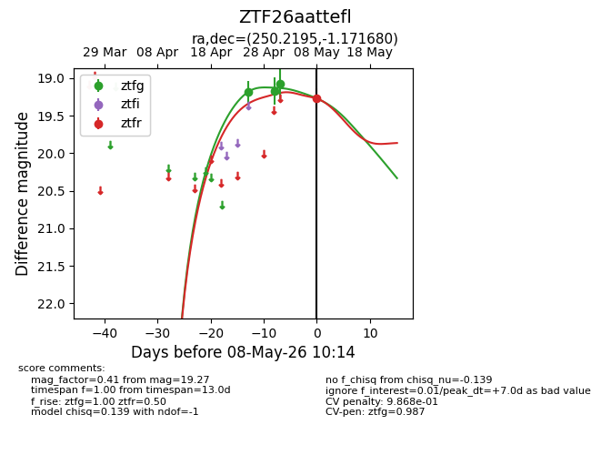
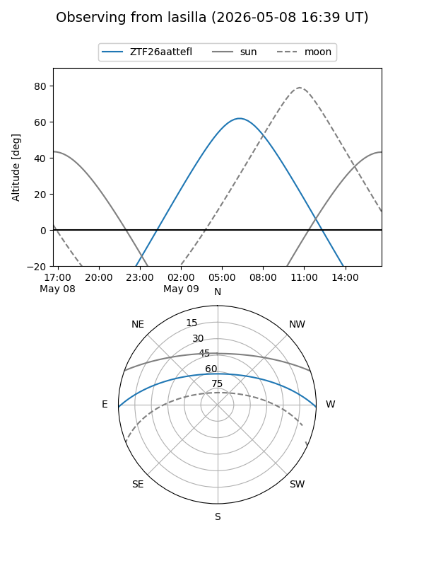
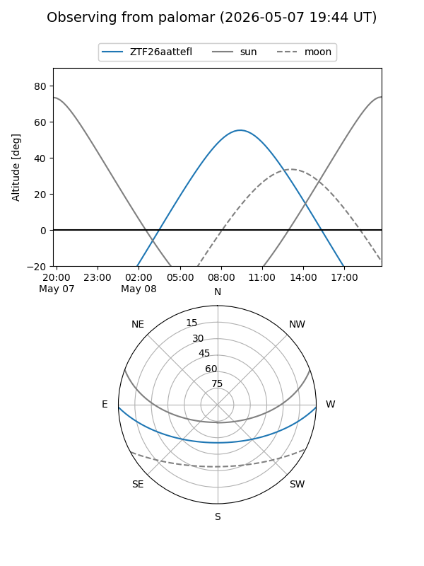
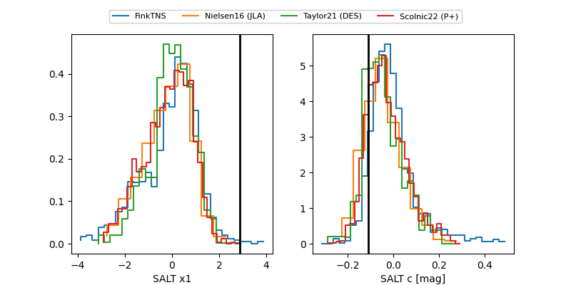

ZTF26aattefl
Target ZTF26aattefl at 2026-05-08 10:16
Aliases and brokers:
FINK: link
Lasair: link
ALeRCE: link
alt names
ZTF26aattefl (ztf,fink_ztf)
Coordinates:
equatorial (ra, dec) = 250.2195,-1.17168
equatorial (HMS+DMS) = 16:40:52.68,-01:10:18.05
galactic (l, b) = (15.5164,+28.07314)
Flags:
likely cv
Photometry:
last ztfg=19.07, ztfr=19.27
3 ztfg, 1 ztfr detections
Lightcurve

Visibility


Additional plots
